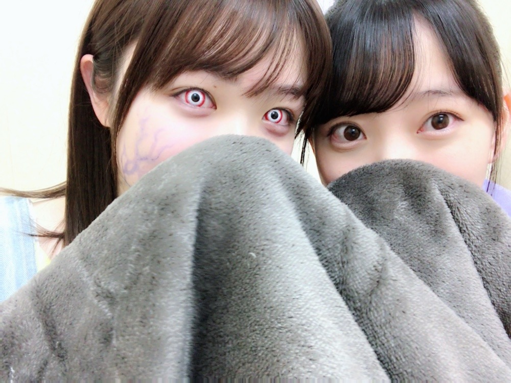

2019/0326Tue#ザンビ
先日の、坂道テレビ
見てくださりありがとうございました✨


小林由依ちゃんと齊藤京子ちゃんとお話ししてお鍋作ってまったりと貴重な時間でした！
昔から、自分からはなかなか話しかけれない人見知りでして来てくれたら仲良くなれるというか来るもの拒まずタイプなので、3人の中だと最年長だししっかりしなきゃ！話さなきゃ！とすーごい緊張してました。笑
手汗具合とか伝わってないといいな...笑
でも楽しかったのでまたおふたりと会ったらいろんなお話ししたいです☺︎
そして日テレドラマ ザンビが
明日、水曜24:59〜最終回になります！
早い...！！寂しい...

みり愛のザンビ迫力があって怖かったなぁ〜

フリージア学園の生徒、仲良しです！
いつもわいわいみんなで楽しかった！
撮影したのは一年前、
既に懐かしく感じます
是非最後までザンビを楽しんでいただけたら嬉しいです✨
本格的に連続ドラマに出させていただくのはザンビが初めてでしたがスタッフさんキャストの皆さんに支えられて日々学び、進み、充実した数ヶ月間でした☺︎
実乃梨という役に出会い、実乃梨の強さや優しさを日々感じながら演じることができて私も自分自身と向き合いながら振り返りながら過ごせました！
お芝居が好きだしもっともっとしたいと思えたし、いつの日か色んなドラマに出られるように少しずつ頑張りたいです✨
ザンビの感想お待ちしてますね〜
明日やで〜

#すっぴんフードマスク
ではははは！
2019/03/26 19:12
コメント(395)
ザンビ最終回、楽しみです。毎週みのりの活躍を見るのがわくわくでした。終わるのが寂しい。堀ちゃんの成長が嬉しかったです。もっといろいろな役柄を演じる堀ちゃんが見たいな。
堀ちゃんすきー！(^^)
ブログ更新ありがとう！！！
坂道テレビはほんとに人見知りなのかなって思うくらい楽しそうにしていて見てるこっちも楽しかったですよ！
ザンビの最終回はhuluで見てしまったのですが、最後衝撃の展開で驚きました！
すっぴんも可愛すぎですね！
お体に気をつけて頑張ってくださいね〜
坂道テレビはほんとに人見知りなのかなって思うくらい楽しそうにしていて見てるこっちも楽しかったですよ！
ザンビの最終回はhuluで見てしまったのですが、最後衝撃の展開で驚きました！
すっぴんも可愛すぎですね！
お体に気をつけて頑張ってくださいね〜
未央奈＼(^o^)／お疲れ様でした
きゃーーさる椅子抱く未央奈可愛すぎる(｡>﹏<｡)
ザンビ最終回寂しいですが、ゲームアプリは楽しみ＼(^o^)／
これからも頑張って(/･ω･)/
フード未央奈可愛いなあ(｡>﹏<｡)♡♡♡
きゃーーさる椅子抱く未央奈可愛すぎる(｡>﹏<｡)
ザンビ最終回寂しいですが、ゲームアプリは楽しみ＼(^o^)／
これからも頑張って(/･ω･)/
フード未央奈可愛いなあ(｡>﹏<｡)♡♡♡
坂道テレビめちゃくちゃ良かったです！
ちゃちゃっとお鍋作っちゃう堀ちゃんさすがです
結構話振ってて凄いなって思ってました。
ザンビは一足早く最終話観ました。
友の強い絆や悲しみを感じる物語でした。
Blu-rayで発売されて欲しいです。
ちゃちゃっとお鍋作っちゃう堀ちゃんさすがです
結構話振ってて凄いなって思ってました。
ザンビは一足早く最終話観ました。
友の強い絆や悲しみを感じる物語でした。
Blu-rayで発売されて欲しいです。
みおな、こんばんは(^_^)
坂道テレビ見たよ(^o^)／
3人でお鍋を作りながら食べながらの会話は、とても自然に会話している様に見えたよ(^_^)
それと、これでみおなが料理が出来ることがよく分かったよ(^o^)／
明日は、レコメンからのザンビ最終回だね(^_^)
両方とも楽しみ＼(^o^)／
必ず聴くし、見るからね(^o^)／
それじゃ、またね(^o^)／
坂道テレビ見たよ(^o^)／
3人でお鍋を作りながら食べながらの会話は、とても自然に会話している様に見えたよ(^_^)
それと、これでみおなが料理が出来ることがよく分かったよ(^o^)／
明日は、レコメンからのザンビ最終回だね(^_^)
両方とも楽しみ＼(^o^)／
必ず聴くし、見るからね(^o^)／
それじゃ、またね(^o^)／
ザンビみおなめっちゃすごかった笑
おつかれ様でした笑笑
byとい
おつかれ様でした笑笑
byとい
未央奈すっぴんめっちゃ可愛い！！
坂道テレビ観たよ
エプロン姿の未央奈可愛かった
手際よく料理していたのでほんとに料理できるのがわかった
未央奈とみり愛の演技が本当～に好きです
エプロン姿の未央奈可愛かった
手際よく料理していたのでほんとに料理できるのがわかった
未央奈とみり愛の演技が本当～に好きです
すっぴんでも可愛いね！
ザンビ最終回楽しみにしてます！
ザンビ最終回楽しみにしてます！
最高だ！未央奈かわいいし！ずっと応援するからねー！
未央奈、ブログ更新ありがとう♪♪
もう、ザンビは最終回なんだね。
早かぁ〜!!
ただ、見てない…放送が…ゴメンm(_ _)m
DVD出ないかな(笑)
スッピン可愛すぎて困る〜(〃ω〃)
もう、ザンビは最終回なんだね。
早かぁ〜!!
ただ、見てない…放送が…ゴメンm(_ _)m
DVD出ないかな(笑)
スッピン可愛すぎて困る〜(〃ω〃)
すっぴん可愛いし綺麗だなー！今日さんま御殿にゆいぽん出てるよ！！！堀ちゃん見てるかな
堀ちゃん！更新ありがとう！
坂道テレビ、見たよ‼
お料理していて、エプロン姿
の堀ちゃん、超絶可愛かったで～！
堀ちゃんが、着てた白のお洋服も
めっちゃ、似合ってたよ～！
そして、可愛かった...
次第に3人の仲が良くなって
いたのが、見ていて
ひしひしとわかったよ～
ザンビも明日で、最終回か～
早いね～！学級委員の実乃梨ちゃん、
毎回、迫力あったな～！
堀ちゃんの演技も、素晴らしかったっすよ～！
明日も期待してますよ～！楽しみ楽しみ‼
すっぴんフードマスク⁉
すっぴんに見えない...
それぐらい、堀ちゃんは可愛いんだな～！
なんか、納得なっとくです。
花粉症予防、しっかりね‼
じゃあ、また次回の更新も
楽しみにしてるよ～！
それでは！
おやすみおな～‼
坂道テレビ、見たよ‼
お料理していて、エプロン姿
の堀ちゃん、超絶可愛かったで～！
堀ちゃんが、着てた白のお洋服も
めっちゃ、似合ってたよ～！
そして、可愛かった...
次第に3人の仲が良くなって
いたのが、見ていて
ひしひしとわかったよ～
ザンビも明日で、最終回か～
早いね～！学級委員の実乃梨ちゃん、
毎回、迫力あったな～！
堀ちゃんの演技も、素晴らしかったっすよ～！
明日も期待してますよ～！楽しみ楽しみ‼
すっぴんフードマスク⁉
すっぴんに見えない...
それぐらい、堀ちゃんは可愛いんだな～！
なんか、納得なっとくです。
花粉症予防、しっかりね‼
じゃあ、また次回の更新も
楽しみにしてるよ～！
それでは！
おやすみおな～‼
ブログ更新ありがとう❗
可愛すぎ(ﾉ≧▽≦)ﾉ
可愛すぎ(ﾉ≧▽≦)ﾉ
坂道テレビ見ました！
未央奈がすごくお姉さんに見えたよ
女優堀未央奈がどんどん目の離せない存在になりました
ますますの活躍が楽しみです
未央奈がすごくお姉さんに見えたよ
女優堀未央奈がどんどん目の離せない存在になりました
ますますの活躍が楽しみです
堀ちゃん、ブログ更新ありがとう。
坂道テレビでは違う坂道グループとのトークとても新鮮で良かったよ。また、いよいよザンビが最終回を迎えるね。明日の放送楽しみにしてるね。
坂道テレビでは違う坂道グループとのトークとても新鮮で良かったよ。また、いよいよザンビが最終回を迎えるね。明日の放送楽しみにしてるね。
坂道テレビ観たよ〜
人見知り特有のキョロキョロしてる感じ
かなり伝わってきた笑
自分も人見知りだから共感！
人見知り特有のキョロキョロしてる感じ
かなり伝わってきた笑
自分も人見知りだから共感！
未央奈ちゃんかわいい✨
ブログ更新ありがとう！ザンビ愛知放送されないから
Huluでみたよー感動したー！いつも可愛いー
Huluでみたよー感動したー！いつも可愛いー
未央奈ちゃん♪こんばんは＼(^o^)／
坂道テレビ見たよ♪
すごく面白かったよ(*^^*)
楽しくて良かったね♪
みり愛ちゃんのザンビ怖いね。
最終回すごく楽しみ(≧∇≦)
色んなドラマ出れると良いね♪
頑張ってね！応援してるよ(*^^*)
すっぴん可愛い(//∇//)
またね♪
未央奈ちゃん神推し
秀喜より！(≧▽≦)
坂道テレビ見たよ♪
すごく面白かったよ(*^^*)
楽しくて良かったね♪
みり愛ちゃんのザンビ怖いね。
最終回すごく楽しみ(≧∇≦)
色んなドラマ出れると良いね♪
頑張ってね！応援してるよ(*^^*)
すっぴん可愛い(//∇//)
またね♪
未央奈ちゃん神推し
秀喜より！(≧▽≦)
毎回、未央奈のブログ楽しみにしてます。
ザンビ最終回絶対見ます！
ザンビ最終回絶対見ます！
堀ちゃん、ブログ更新ありがとう〜
坂道テレビ見たよ〜
堀ちゃんが一生懸命仕切ろうとする姿が、
可愛くて、堀ちゃんも大人になったんだなー
としみじみ感動しました！
堀ちゃんが、圧倒的にかわいかった！
ザンビの堀ちゃんの演技、
緊張感と迫力があってかっこよかった！
それとやっぱり、超絶かわいい〜
これからも、堀ちゃんの演技をたくさん見たい！
早く、ホットギミックも見たいよー
堀ちゃん、これからも全力で応援し続けるよー
坂道テレビ見たよ〜
堀ちゃんが一生懸命仕切ろうとする姿が、
可愛くて、堀ちゃんも大人になったんだなー
としみじみ感動しました！
堀ちゃんが、圧倒的にかわいかった！
ザンビの堀ちゃんの演技、
緊張感と迫力があってかっこよかった！
それとやっぱり、超絶かわいい〜
これからも、堀ちゃんの演技をたくさん見たい！
早く、ホットギミックも見たいよー
堀ちゃん、これからも全力で応援し続けるよー
みおな〜坂道テレビよかったよー！
応援してます！
最後の写真めっちゃかわいい！
みーーーーおなっ！！！
アルバム楽しみだなぁ
きょうもかわいいみおな
わたしもがんばって勉強しなきゃぁ
アルバム楽しみだなぁ
きょうもかわいいみおな
わたしもがんばって勉強しなきゃぁ
ザンビこっちで放送されてないけど、再放送ので毎回録画して見てます！！！！
未央奈ちゃんが与田ちゃん「私が守るから！」って言うところがかっこよくてかっこよくて･･･！
最終回も楽しみです！！！！
ホットギミックもたのしみです！！！
未央奈ちゃんの演技が上手いです･･･☆彡
未央奈ちゃんが与田ちゃん「私が守るから！」って言うところがかっこよくてかっこよくて･･･！
最終回も楽しみです！！！！
ホットギミックもたのしみです！！！
未央奈ちゃんの演技が上手いです･･･☆彡
みおなちゃん更新ありがとう ！
坂道テレビ見たよー！みおなちゃんが料理しているの初めて見ました(*^^*)!! お鍋めっちゃ食べたかったです(笑)
そっか～1年も前の撮影だったんだね！実乃梨の演技と優しい所がみおなちゃんにぴったりで、最終回が楽しみです✨!!明日絶対みるね!!
これからも頑張ってね!!
すっぴん綺麗すぎて癒されました！✨
坂道テレビ見たよー！みおなちゃんが料理しているの初めて見ました(*^^*)!! お鍋めっちゃ食べたかったです(笑)
そっか～1年も前の撮影だったんだね！実乃梨の演技と優しい所がみおなちゃんにぴったりで、最終回が楽しみです✨!!明日絶対みるね!!
これからも頑張ってね!!
すっぴん綺麗すぎて癒されました！✨
坂道テレビおもしろかった！
未央奈が話を回してて流石だなって思った！
ザンビも楽しみ！
でははは！
未央奈が話を回してて流石だなって思った！
ザンビも楽しみ！
でははは！
ブログ更新ありがとう！
NHKさんのやつ見てて楽しかったです！
色々な未央ちゃんを知れて幸せデスゥ
ザンビ最終回は寂しいなぁ〜
また続編みたいなやつあるのかな？？
あったらいいな！！お願いします笑笑
体調には気をつけてね〜
したっけ〜〜
どさんこしゅーちゃん
NHKさんのやつ見てて楽しかったです！
色々な未央ちゃんを知れて幸せデスゥ
ザンビ最終回は寂しいなぁ〜
また続編みたいなやつあるのかな？？
あったらいいな！！お願いします笑笑
体調には気をつけてね〜
したっけ〜〜
どさんこしゅーちゃん
ブログ更新ありがとー！
坂道テレビめっちゃ面白かった！
ザンビ最終回見たけど泣いちゃったよー
アメトーク見たけどやっぱ堀画伯の描いた絵は最高です笑
体調に気をつけてこれからも頑張ってください！
坂道テレビめっちゃ面白かった！
ザンビ最終回見たけど泣いちゃったよー
アメトーク見たけどやっぱ堀画伯の描いた絵は最高です笑
体調に気をつけてこれからも頑張ってください！
未央奈ちゃん、今日も一日お疲れさまです。
毎回怖いストーリーで、小学生、
もしかしたら中学生にもキツイかなと
思う映像もあって、
僕もハラハラドキドキって感じですが、
毎回、スピッツさんの「楓（飛鳥？）」が
流れるときには目頭が熱くなります。
最終回は、多分、我慢できなくて
涙が流れるんじゃないかなぁ。
こんなのみせられたら、
ホットギミックが待ち遠しくてたまりません！
未央奈ちゃん、これからも
僕たちに感動をください！！！
ずっと応援しています！！！
大好きです！！！
毎回怖いストーリーで、小学生、
もしかしたら中学生にもキツイかなと
思う映像もあって、
僕もハラハラドキドキって感じですが、
毎回、スピッツさんの「楓（飛鳥？）」が
流れるときには目頭が熱くなります。
最終回は、多分、我慢できなくて
涙が流れるんじゃないかなぁ。
こんなのみせられたら、
ホットギミックが待ち遠しくてたまりません！
未央奈ちゃん、これからも
僕たちに感動をください！！！
ずっと応援しています！！！
大好きです！！！
ザンビ見てます!!!!
最終回楽しみすぎ（笑）
はやく見たーい!!
ホットギミックも楽しみにしてます
やっぱ未央奈は可愛すぎやと思う
最終回楽しみすぎ（笑）
はやく見たーい!!
ホットギミックも楽しみにしてます
やっぱ未央奈は可愛すぎやと思う
ブログ更新ありがとう！
坂道テレビおもしろかった！
ザンビ最終回楽しみにしてるねー！
坂道テレビおもしろかった！
ザンビ最終回楽しみにしてるねー！
こんばんは。
おさるさんシート？を離さない堀さんが可愛すぎます。
坂道テレビは、見応えありましたよ！
堀さんの料理の手際も良かったですね。
あのお二人は、堀さんのオーラに萎縮しちゃったのかな。
料理ではなく、カフェとかのシチュエーションの方がリラックスできたのかもしれませんが、次回に会えたら親密度も上がってるのでは。
ザンビは、いよいよ最終回ですね。
主人公の楓さんより、実乃梨さんの怪我を含めた結末が気になって仕方がありません。
堀さんの連続ドラマへの出演を切に願います。
ホットギミックが、きっかけとなること信じてます。
前回のブログのコメント、かなり時間差で反映される時があるので、ずっと観察してましたが、未だに無理、諦めないと...
堀さんの画風を力説したのですが。。
堀さん視点・アプローチは、良いと思います。
世間的の上手い下手の範疇に入れては駄目ですよね。
見せかけより、描き手の心を見なければならないのです。
堀さんのフードマスク姿が、何と言いますか、カッコ良く素敵です。
流石のモデルさん。
花粉にめげずに、花見をしたいですね。
夜桜の場合は、気温に注意して下さいね。
頑張って行きましょう！
おさるさんシート？を離さない堀さんが可愛すぎます。
坂道テレビは、見応えありましたよ！
堀さんの料理の手際も良かったですね。
あのお二人は、堀さんのオーラに萎縮しちゃったのかな。
料理ではなく、カフェとかのシチュエーションの方がリラックスできたのかもしれませんが、次回に会えたら親密度も上がってるのでは。
ザンビは、いよいよ最終回ですね。
主人公の楓さんより、実乃梨さんの怪我を含めた結末が気になって仕方がありません。
堀さんの連続ドラマへの出演を切に願います。
ホットギミックが、きっかけとなること信じてます。
前回のブログのコメント、かなり時間差で反映される時があるので、ずっと観察してましたが、未だに無理、諦めないと...
堀さんの画風を力説したのですが。。
堀さん視点・アプローチは、良いと思います。
世間的の上手い下手の範疇に入れては駄目ですよね。
見せかけより、描き手の心を見なければならないのです。
堀さんのフードマスク姿が、何と言いますか、カッコ良く素敵です。
流石のモデルさん。
花粉にめげずに、花見をしたいですね。
夜桜の場合は、気温に注意して下さいね。
頑張って行きましょう！
未央奈ちゃんブログ更新ありがとうございます いつもお仕事お疲れ様です応援していますので未央奈ちゃん頑張ってくださいね大好き
いつもお仕事お疲れ様です応援していますので未央奈ちゃん頑張ってくださいね大好き
ブログ更新ありがとー！
今日も可愛いすぎ～‼
坂道テレビ面白かったよ
未央奈ちゃんの映画絶対見ます！
いつも応援してます！
今日も可愛いすぎ～‼
坂道テレビ面白かったよ
未央奈ちゃんの映画絶対見ます！
いつも応援してます！
もちろんこの前の坂道みたよ！！！
グレーのマスク似合う！！❤️
体調には気をつけて！
応援してます
グレーのマスク似合う！！❤️
体調には気をつけて！
応援してます
未央奈ブログ更新ありがとう！
めっちゃかわいい！
そのマスク同じ色使ってる！w
めっちゃかわいい！
そのマスク同じ色使ってる！w
堀ちゃんブログ更新ありがとうございます
ザンビは結構リアルにハマってます(笑)
ほんとに、毎週毎週楽しみで仕方ありません
でも、もう終わっちゃうと考えると、ちょっぴり寂しいです
ザンビは結構リアルにハマってます(笑)
ほんとに、毎週毎週楽しみで仕方ありません
でも、もう終わっちゃうと考えると、ちょっぴり寂しいです
坂道テレビは「率先してトークをリードしなきゃ」という
年上、先輩としての心配りがよく見えました
ザンビは、飛鳥ちゃんが主役ではあるけど、
未央奈の実乃梨ちゃんが実は重要なキーパーソンだよね
アクションもあるし、
主人公と物語を前に推し進める欠かせない役
このまま最終回も楓と聖と3人生き残って欲しいなぁー
年上、先輩としての心配りがよく見えました
ザンビは、飛鳥ちゃんが主役ではあるけど、
未央奈の実乃梨ちゃんが実は重要なキーパーソンだよね
アクションもあるし、
主人公と物語を前に推し進める欠かせない役
このまま最終回も楓と聖と3人生き残って欲しいなぁー
未央奈〜こんばんは〜坂道テレビ観たよ〜未央奈と小林由依ちゃんと齋藤京子ちゃんとの三人で話しながら鍋を作る企画楽しかったし美味しそうで一緒に食べたかったな〜ザンビもう最終回なんだよね〜 毎回楽しみに観てるからもう終わっちゃうのが寂し過ぎるな〜本当に
毎回楽しみに観てるからもう終わっちゃうのが寂し過ぎるな〜本当に
 みり愛のザンビ確かに怖いよね最終回楽しみに観ますね〜
みり愛のザンビ確かに怖いよね最終回楽しみに観ますね〜
 未央奈もだけど乃木坂の皆んな本当に仲良しだよね〜その仲の良さと強い絆が私は大好きなんだよね〜未央奈のスッピンマスクというより普通にスッピンで美人さんだよね〜本当に
未央奈もだけど乃木坂の皆んな本当に仲良しだよね〜その仲の良さと強い絆が私は大好きなんだよね〜未央奈のスッピンマスクというより普通にスッピンで美人さんだよね〜本当に 花粉症は大丈夫なのかな？ノドのこともあるから気をつけてね未央奈〜大好き〜
花粉症は大丈夫なのかな？ノドのこともあるから気をつけてね未央奈〜大好き〜
いつもブログ楽しみに見てます！
ザンビ見ました！最後ホラーから一気に感動的な展開になっていくのでとても面白かったしうるうるしました！
ゲームも配信が待ち遠いしです！
映画も見に行きます！
ザンビ見ました！最後ホラーから一気に感動的な展開になっていくのでとても面白かったしうるうるしました！
ゲームも配信が待ち遠いしです！
映画も見に行きます！
こんばんはお疲れさま！
乃木欅日向コラボ。
録画しててまだ見てないねん(笑)
楽しんで見るよ。
ゆいぽんもずーみんとのゆいちゃんずの時から好きやし、ずーみん友達のラーメン大好き京子ちゃんも面白いし好きやな(笑)
どんな化学反応したんかな？(笑)
あと、ザンビは関西はないねん！！
残念や～。
でもみんなお疲れさまやね！
と堀ちゃん、スッピンでも美白べっぴんさんやと思ってます！
かりんちゃん、ゆうりちゃん卒業発表したね。
寂しいね。
でも堀ちゃんらメンバー中心となり、飛鳥ちゃん、与田ちゃん、桃ちゃん、美月ちゃん。
言うたらきりないけど、みんなで切磋琢磨して乃木坂を更に盛り上げて頑張ってほしいです。
乃木坂応援します！
頑張れ～。
ではではまたね。
体調気をつけてくださいね。
ほなね、堀ちゃん。
乃木欅日向コラボ。
録画しててまだ見てないねん(笑)
楽しんで見るよ。
ゆいぽんもずーみんとのゆいちゃんずの時から好きやし、ずーみん友達のラーメン大好き京子ちゃんも面白いし好きやな(笑)
どんな化学反応したんかな？(笑)
あと、ザンビは関西はないねん！！
残念や～。
でもみんなお疲れさまやね！
と堀ちゃん、スッピンでも美白べっぴんさんやと思ってます！
かりんちゃん、ゆうりちゃん卒業発表したね。
寂しいね。
でも堀ちゃんらメンバー中心となり、飛鳥ちゃん、与田ちゃん、桃ちゃん、美月ちゃん。
言うたらきりないけど、みんなで切磋琢磨して乃木坂を更に盛り上げて頑張ってほしいです。
乃木坂応援します！
頑張れ～。
ではではまたね。
体調気をつけてくださいね。
ほなね、堀ちゃん。
こんにちは‼︎
ブログ更新、ありがとうございます♪
坂道テレビ、観ましたよ‼︎
緊張しているのはなんとなく分かったけど、それでも一生懸命会話をリードしていて、偉いなあって思いました♪
好きなタイプとか、理想のデートとか、盛り上がる定番のトークテーマですよね‼︎
しかも、観ている方も興味津々(笑)。
ナイスチョイスです♪
ザンビは、もう最終回なんですね。
なんか、過ぎてしまうとあっという間ですね…
しかも、撮影が1年前だったとは驚きです‼︎
まあ、でも、よく考えたら、ザンビプロジェクトが公表された時、シャワーシーンがちらっと流れましたもんね。
そう考えると、長期にわたって作り上げた壮大なプロジェクトだったんですね…‼︎
明日の放送、見逃さないように気をつけます。
あ、そうそう、レコメンも聴き逃さないようにしなきゃ…‼︎
そして、今週末は、堀北コンビでのテレビ出演が2つほどあるみたいですね♪
自分も大好きな二人組。
楽しみにしてますね‼︎
ではでは、また。
明日も未央奈にとっていい1日になりますように♪
ブログ更新、ありがとうございます♪
坂道テレビ、観ましたよ‼︎
緊張しているのはなんとなく分かったけど、それでも一生懸命会話をリードしていて、偉いなあって思いました♪
好きなタイプとか、理想のデートとか、盛り上がる定番のトークテーマですよね‼︎
しかも、観ている方も興味津々(笑)。
ナイスチョイスです♪
ザンビは、もう最終回なんですね。
なんか、過ぎてしまうとあっという間ですね…
しかも、撮影が1年前だったとは驚きです‼︎
まあ、でも、よく考えたら、ザンビプロジェクトが公表された時、シャワーシーンがちらっと流れましたもんね。
そう考えると、長期にわたって作り上げた壮大なプロジェクトだったんですね…‼︎
明日の放送、見逃さないように気をつけます。
あ、そうそう、レコメンも聴き逃さないようにしなきゃ…‼︎
そして、今週末は、堀北コンビでのテレビ出演が2つほどあるみたいですね♪
自分も大好きな二人組。
楽しみにしてますね‼︎
ではでは、また。
明日も未央奈にとっていい1日になりますように♪
お猿とみおなちゃんかわいいなあ〜
みおなちゃんは社交的でいろんなグループの子とかとも仲良くなれててほんまにいつも尊敬してる！！
れに
みおなちゃんは社交的でいろんなグループの子とかとも仲良くなれててほんまにいつも尊敬してる！！
れに
未央奈ブログ更新ありがとう
ザンビ楽しみにしてるよ
ザンビ楽しみにしてるよ
更新ありがとう〜
最近忙しくてコメント書けなかったんやごめんね♪
お彼岸の時期で実家の花屋を手伝い＋倉庫でのバイトで1日中バイトが続いてあまりブログも読めなかったから今から全部読みますね〜
スマホを新しく変えたのでその記念にモバメを取り始めました、いつも届くの楽しみしてます！
坂道TV見ましたよ、ほんとに緊張してた？全然そんな感じじゃなかったよ、平手ちゃんと仲がいいの初めて知りました、色んな今後の話とか来てけ良かったし鍋も美味しそうだった笑 なぁちゃん卒業ライブの所でちょっとうるっと来ました涙脆いんですよね僕映画とかですぐ感動シーンで泣いちゃうんですよね笑
その猿の椅子可愛いですね！
みり愛怖いな、堀ちゃんのゾンビドッキリを思い出すな〜
最近バイオやってないな、またやりたくなっちゃった！
コメ読みお疲れ様で〜す★
またね〜
最近忙しくてコメント書けなかったんやごめんね♪
お彼岸の時期で実家の花屋を手伝い＋倉庫でのバイトで1日中バイトが続いてあまりブログも読めなかったから今から全部読みますね〜
スマホを新しく変えたのでその記念にモバメを取り始めました、いつも届くの楽しみしてます！
坂道TV見ましたよ、ほんとに緊張してた？全然そんな感じじゃなかったよ、平手ちゃんと仲がいいの初めて知りました、色んな今後の話とか来てけ良かったし鍋も美味しそうだった笑 なぁちゃん卒業ライブの所でちょっとうるっと来ました涙脆いんですよね僕映画とかですぐ感動シーンで泣いちゃうんですよね笑
その猿の椅子可愛いですね！
みり愛怖いな、堀ちゃんのゾンビドッキリを思い出すな〜
最近バイオやってないな、またやりたくなっちゃった！
コメ読みお疲れ様で〜す★
またね〜


坂道テレビ、おもしろかったよ！
性格が良い人かー
なるべくイライラしないように気をつけてるけど、どうなんだろ？未央奈、俺って性格良い？
未央奈の台所姿、似合ってた！一人暮らしのための、材料の買い方とかメニューの立て方って無い？
一人暮らしだと食べれる分と思うと、あんまり種類買えないし、同じものばっかりになってしまって、料理が続かないんだよねー
ザンビは夜に見るには怖過ぎる！明るい時間に楽しく見てるよー
実乃梨は俺が守ってあげたい！
俺ももっと未央奈の芝居みたい！
未央奈が出てる作品、楽しみにしてるね！
ホットギミックの公開、まだかなー
これからも応援してるよ！